My team and I won $1,000 at the UNEP hackathon and now we’re piloting our project with KEFRI. CSA gave me the confidence to compete and unlocked a chain reaction: from joining the data community to discovering a passion that shapes my career every day.
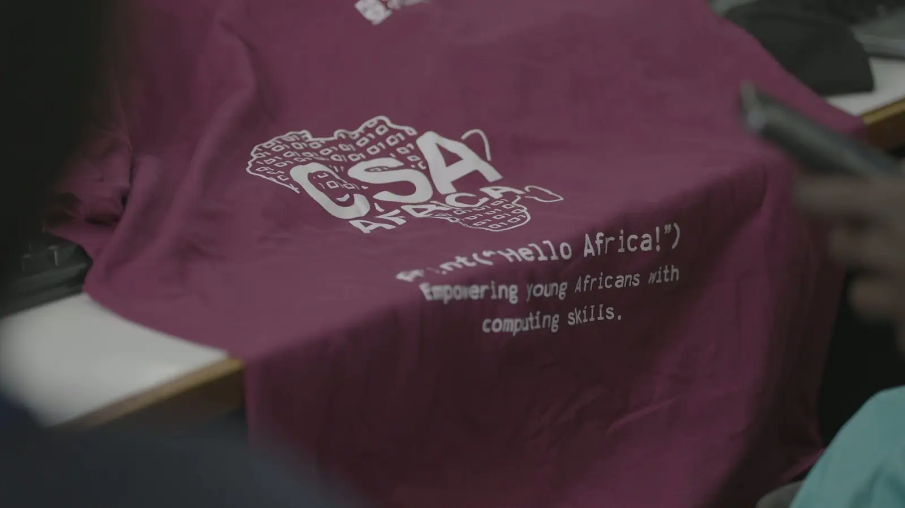
Computer Science Academy Africa · Since 2018
Empowering young Africans with computing skills
An international outreach initiative backed by the University of Glasgow, running intensive three-week Python programming workshops across the continent.
700+Lives transformed
13African countries
50%Female participation
Why CSA Africa exists
Three rejections. A decade alone. Two weeks that changed everything.
After failing three times to break into computer science, our founder (Dr Sofiat Olaosebikan) spent a decade teaching herself computing with no guidance. Two weeks of Python training in 2014 changed her trajectory completely.
That’s why CSA Africa exists: to be that critical launchpad for every young African with potential.
Our workshops are designed for university students, early-career researchers, and professionals.
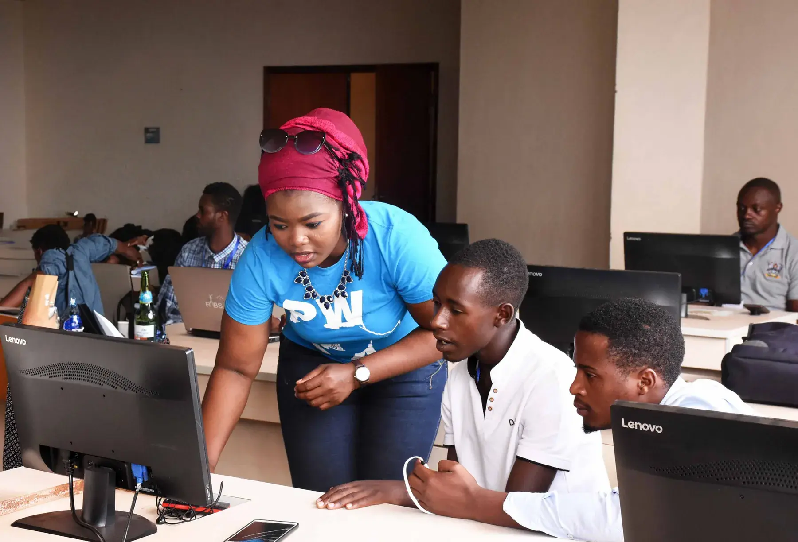
Dr Sofiat Olaosebikan with CSA Africa participants
What makes us different?
The barrier was never only the code
We remove the practical and psychological obstacles that keep talented people out of the room — so the learning can actually land.
- 01
Our workshop is free at the point of need
- 02
We are intentional about gender parity
- 03
We provide childcare support for mothers
- 04
We provide accommodation in the host university hostel
- 05
We reimburse the cost of road travel for those attending from afar
- 06
We run confidence and mindset transformation sessions
Our impact in numbers
Eight years, five workshops, one continent
5Python programming workshops
700Lives transformed across 13 African countries
50Female participation consistently maintained since 2022
90Participants reported improved programming confidence
200k+Raised in funding and institutional support
Our Python Workshops
Three weeks that rewrite what people believe they can build
We run our annual workshops in collaboration with host universities across Africa. We’ve partnered with institutions in Nigeria, Rwanda, and Kenya, with plans to expand further across the continent.
Our workshops are intensive and hands-on with multiple tracks catering to different experience levels:
- 01
Python Fundamentals (for beginners)
- 02
Python for Software Engineering
- 03
Python for Data Science
- 04
Python for Machine Learning
- 05
Python for Internet of Things (IoT)
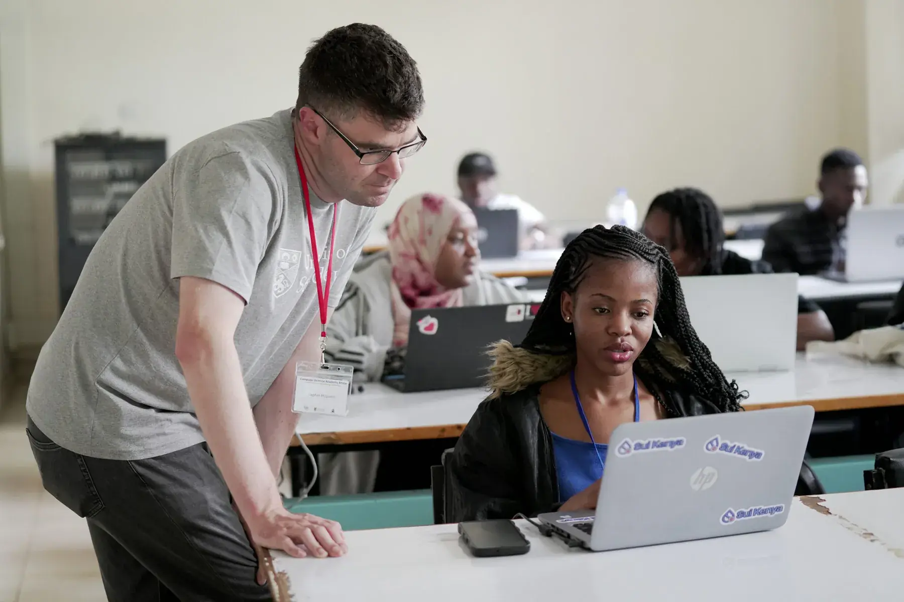
Hands-on session · CSA Africa 2025
Application timeline
- Step 01
January / February
Call for applications opens
- Step 02
May
Selected participants notified
- Step 03
July / August
Workshop takes place
Our past workshops
Every edition, in its own place
Ibadan, Kigali, online through the pandemic, Lagos, Nairobi — five cohorts since 2018.

2025
University of Nairobi, Kenya
14 - 31 July (3 weeks)
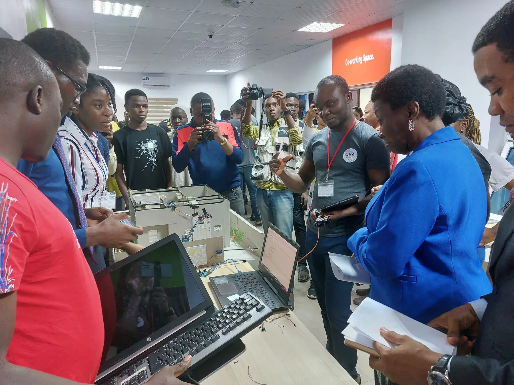
2022
NitHub, University of Lagos, Nigeria
18 July - 03 August (3 weeks)
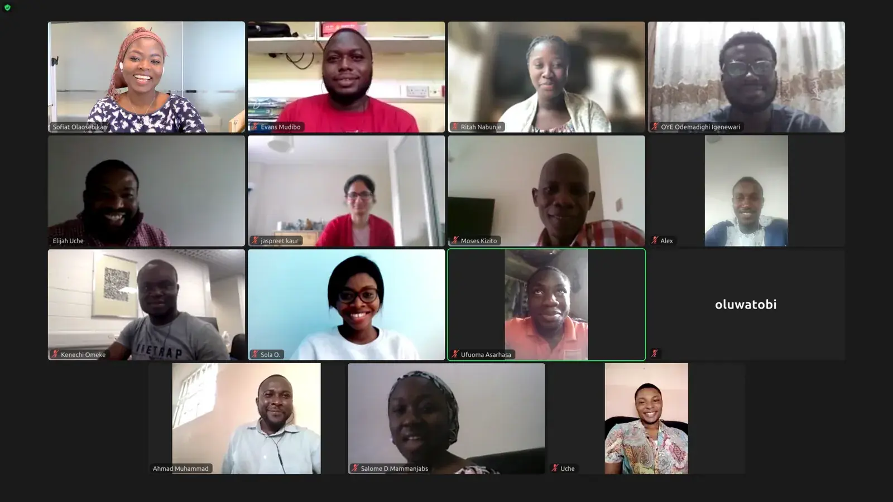
2021
Online (COVID pandemic era)
30 August - 10 September (2 weeks)
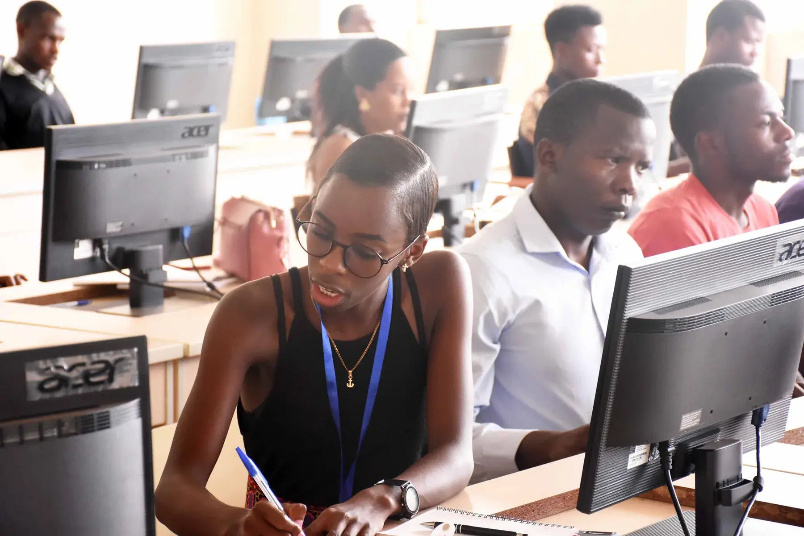
2019
University of Rwanda, Kigali
19 - 30 August (2 weeks)
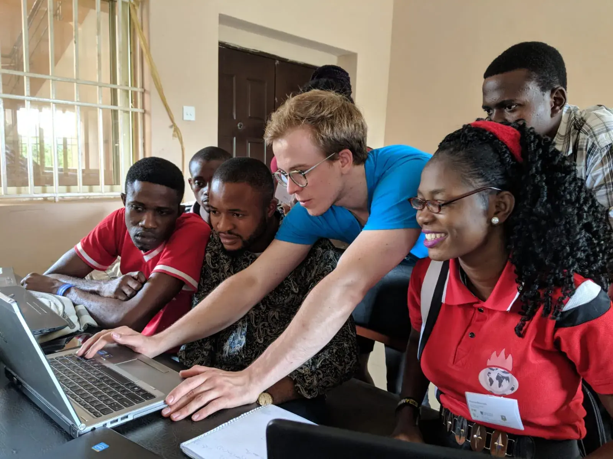
2018
University of Ibadan, Nigeria
30 July - 10 August (2 weeks)
Our testimonials
What changed, in their words
Fourteen participants, in their own words — on what the three weeks changed for them.
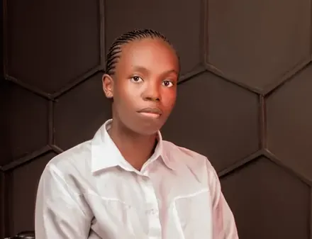
“Bringing my 3-year-old son to CSA’s workshop changed everything, thanks to their childcare support. It proved nothing is impossible. When challenges come, I remember: I was selected, I travelled to Nairobi, I did this. Now girls in my community see me and know it’s never too late to take chances on themselves.” Marcella Barasa · CSA Africa 2025
13 more · swipe or use the arrows
CSA 2018 bridged math theory and real engineering for me, launching everything that followed: neural network research, my ML Engineer intern role, to building OCR systems that transform handwritten books into digital ledgers. Now I’m paying it forward as Lead Tutor for Data Science Nigeria, teaching 80+ students what CSA taught me.
Before CSA, I looked for assignments to complete. After, I looked for problems to solve. That shift led me to build a platform connecting users to hackathons, turning the skills we learn into real-world solutions. CSA didn’t just teach me to code; it taught me to see opportunities everywhere.
CSA ended my confusion about which tech path to choose, even as a computing student. The workshop gave me clarity and skills I could use immediately. Now I’m analysing health datasets a Kenyan company trusted me with, contributing to real decision-making.
CSA changed my mindset from passive acceptance to active problem-solving. I thought of a solution to every problem I encountered and sought out opportunities: I got a part-time job teaching robotics to elementary school pupils, multiple paid internship opportunities, even won a MacBook.
After losing my only parent, I was drowning in depression with no hope. CSA ignited my passion for programming and gave me a reason to keep going. Now I’m building tools, writing again, and planning to return to school. This workshop literally saved my life.
The CSA Africa workshop is the best in-person programming bootcamp I’ve ever attended in Nigeria. It significantly strengthened my Python skills and deepened my understanding of core computer science concepts—making my current undergraduate CS coursework much easier to grasp. The experience also opened real-world opportunities: I completed my first internship working on a Python-based project and even contributed to the official Python documentation.
Before the program, I had little knowledge of programming and with a great desire to know more. Today, I am proficient in Python, Kotlin, and C++ programming languages, and work as a Mobile Software Engineer. The CSA Africa initiative gave me the solid foundation in which I have built all my technical skills on.
CSA Africa transformed my journey from a physics student with no coding background into a confident programmer and leader. It helped me excel in CS courses, earn a scholarship, join the Ghana Data Science Bootcamp, and get elected as Vice President of my department. I even built a GPA calculator to support my peers, proof of how practical and empowering the experience was.
Three months after graduation, I’m interning at a major fintech company in Nigeria and I’m still emotional about it. CSA gave me what coursework couldn’t: real confidence, hands-on skills, and proof that I belong in tech.
CSA Africa helped me find my direction. I was initially unsure of my path, but by the end of the workshop, I confidently chose to pursue the Internet of Things (IoT). I connected with brilliant peers who supported my growth, and the knowledge I gained has empowered me to innovate and ultimately led to my role as an IoT Ecosystem Lead.
The CSA Africa initiative has left an indelible mark on my life, enriching me with invaluable skills and fostering lifelong connections. Immersed in the Internet of Things (IoT) track, I absorbed fundamental concepts and industry knowledge under the guidance of an exceptional tutor.
The CSA Africa workshop gave me the opportunity to learn new skills, apply Python programming in my research and improve my coding skills. It has also helped me to connect with other tech enthusiasts and build a strong professional network.
Our Partners
Universities, funders and industry backing the work
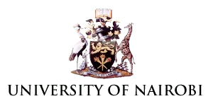
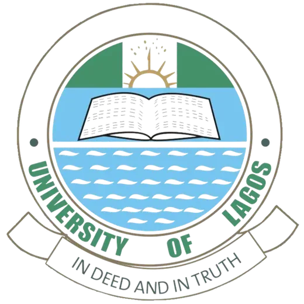
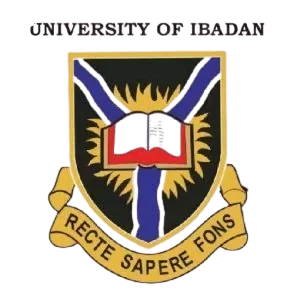
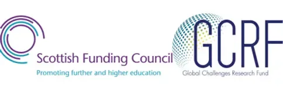
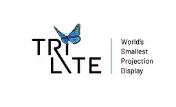

Get involved
Ready to Transform Lives?
Join us in empowering the next generation of African tech innovators.